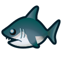
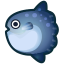
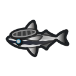
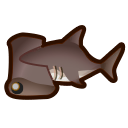
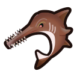
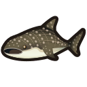

Poissons à aileron |
|
|---|
| Nom | Image | Temps | Prix |
|---|---|---|---|
| Grand Requin Blanc |
 |
16 h - 9 h | 15 000 clochettes |
| Lune de Mer |
 |
16 h - 9 h | 4 000 clochettes |
| Remora Rayé |
 |
Toute la journée | 1 500 clochettes |
| Requin Marteau |
 |
16 h - 9 h | 8 000 clochettes |
| Requin Scie |
 |
16 h - 9 h | 12 000 clochettes |
| Requin Baleine |
 |
16 h - 9 h | 12 000 clochettes |